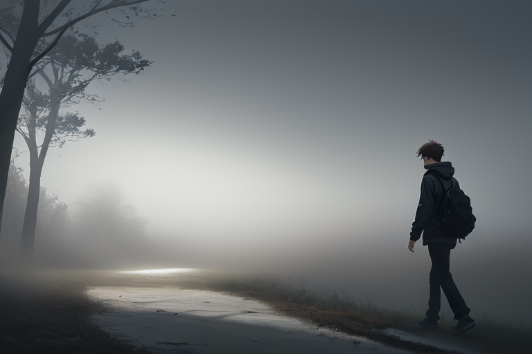
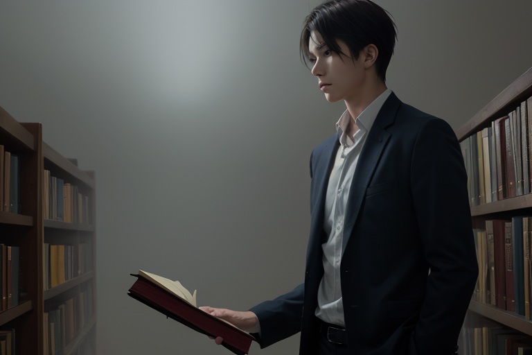
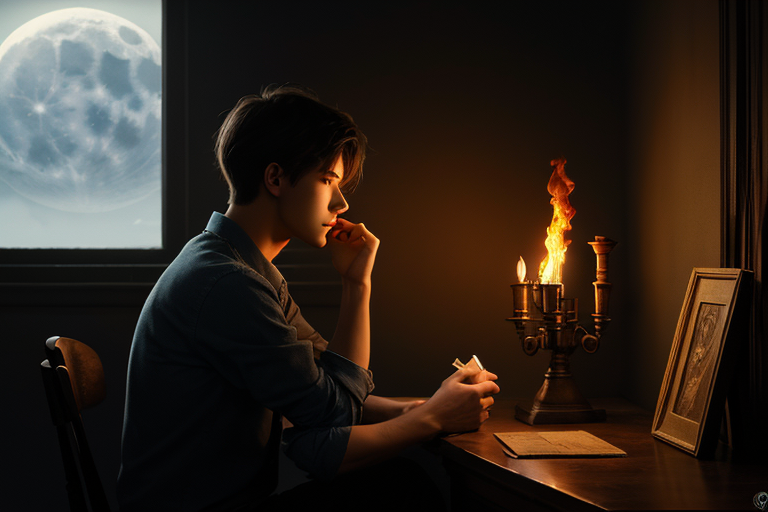

火のない生活
第1章 火のない生活
冷たい風が窓枠に沿って滑り、ガラス面で何度も折れ曲がる。部屋の中へ入ってくるとすぐに静寂の中に収まり、その姿は透明な氷となって壁や床を這い回っているかのように見えた。外から聞こえるのは遠くの街灯に集まる微かな音楽だけだ。
藤原凛はキッチンに向かいながら、彼女の心臓が毎秒一定リズムで鼓動していることを確認する。今日もまた一人きりの晩餐を過ごす運命だった。
冷蔵庫から取り出した食材は寒々とした温度を持ち、手に触れるその肌寒さがあたかも自身の中にある熱いものが吸い取られそうに感じられた。彼女は包丁を取り出し、刃先が光を反射させながらもまだ鋭角な形をしているのを見て小さく息を吐いた。
電気ストーブで温めた食器には湯気がたち上り始めるが、その量は決して多くはない。昔と比べて暖房器具からの熱量も薄くなっていることを肌で感じ取ったとき、彼女の表情に僅かな落胆の色が浮かぶ。
「なんだこの調理法……」
キッチンから流れる微弱な音響と共に、ストーブの電子的な小さな音だけが部屋を満たす。それが今や食事作りにおける最も強い刺激であり、それを耳で追ってみるのも今日一日に見慣れたパターンだった。
彼女は包丁を持った手から力を取り去り、冷たい素材と目線を合わせてしばし考える時間を過ごした。「火」が存在しなくなった世界での生活とは何か。この問いに対する答えを探しながら、彼女の視界の隅で新たな思考が始まった。
電流が細々とした音と共に灯油ストーブへ流れ込む光景は静寂に沈んだ部屋の中で特に際立っていた。その繊細な働きを観察していると不思議なものを感じた。それはかつて人々が火の炎を見つめながら感じていた暖かさや力強さとは全く異なるものだった。
「……でも、これが新しい世界なのね」
空気が止まりかける寸前で彼女は静かな息遣いと共に自問自答を続けた。「古い」と思われそうになる道具たちが今なお使われている理由。それは何かを失った分だけ人々の心の中に新たな種子を植えつけ、それが芽吹いていく瞬間を見守るためだということが彼女には少しずつではあるものの明らかになっていた。
ストーブから放たれる僅かな暖かさと同時に部屋が温まり始める。その光はあくまで淡いものでありながらも頼りになるような安心感があった。それは彼女の視線を引き込む力強さと共に、新たな生活様式に順応していく人々の希望でもあった。
この世界での調理法は複雑であるが故に、手間ひまかけてこそ得られる味わいと深みを持つようになった。「火」がないからといって料理や食事そのものが無価値な存在にはならない。むしろそれらを包んだ新しい文化の産物として、人々の心の中に温かさを見つけ出すことが求められていた。
凛は食材に再び手をつけたとき、新たな表情を見せて息をする度に口元が僅かな笑みを見せ始める。彼女自身の中から芽生えた問いに対する答えを抱きながら、静寂と対話を続けている自分を感じ取ったのだ。
「新しい火種」
それはただの言葉ではなく、彼女の心の中に生まれた新たな灯火そのものだった。今日一日が終わりかけていく中で、明日への希望と共に暖かさを見つけることが出来ていたのである。
科学技術の遅れ
第2章 科学技術のれ
朝靄が薄暗い街路に広がり、静かな歩みで日が出る前に藤原凛の足元をぬめる。彼は路面の湿気を感じながら歩いていく。空には雲の厚さから雨予報があり、遠くで雷鳴が聞こえる。
「今日は一日中家で過ごすよ」と昨日会った友達にメッセージを送る。「そうか」しか返事がない。今日の朝は特に孤独だ。藤原凛は公園脇にある科学技術博物館へ向かい、扉を開くと冷たさが体中に広がる。
展示室には多くの模型や機械が設置されているが、それら全てに共通する欠けている要素があるように思える。何もないわけではなくそれはただ「火」だった。人々は科学の進歩を忘れ去り、「暖める」「照らす」という基本的な欲求に対して適切な解決策を見つけることができていない。
彼が入った展示室では、昔ながらのエンジンや古い電気器具などが並んでいる。その中の一つは火を使っていた時代のもので、燃え盛る炎を再現したビデオがあった。「これが世界だったのか？」と感嘆せずにいられない。熱く燃える炎が青白いスクリーンに映し出される。
「なぜ彼らはそれを捨てたんだ？」
彼女は声に出さず自問する。空には暗雲が立ち込める。雨粒が建物の外壁を叩き、静かな鼓動のように響く。
藤原凛は展示室から出て廊下を通る。「火を使えない世界」という看板を見つけた時、「進歩とは何なのか？」と疑問に思う自分を感じ取った。「進化したのか？それとも退行しただけか？」彼の思考が渦巻き、自分の体を包み込む。
空は急速に暗くなり、雨粒はますます強くなる。それは彼女の心と同じように落ち込んでいくようだった。
博物館の一角にある小さな会議室では、数人の学者たちが熱烈なディスカッションをしているのが聞こえてくる。「でももし火を使えたら」という言葉だけが聴き取れる。それは他人の声でありながら、彼女自身の心で叫んでいるかのように響く。
「しかし彼らにはその選択肢はなかったんだ」
藤原凛は自問した。
この街路に広がる靄の中に沈む朝日と冷たい雨粒を眺めている。
文化の変容
第3章 文化の変容
雨粒が細い窓枠に伝わり、水たまりを作り出す音。館内は静寂だったが、その外側で自然と文明との交錯が響く。空気には湿った土埃が混ざっている。古びた絨毯の上で足跡が生じる度に小さな音と共に新たな感触が生まれていた。
彼女は古いピアノを弾いていた。その指先、黒と白の鍵盤を奏でていくその動きだけが唯一現実感を持っているかのように思えた。
「千秋さん？」
凛の声は静寂の中にぽつりと浮き上がった。
宮崎千秋は立ち上がり、振り返らずに答える。「ここには音楽がある」。彼女の言葉は断定的で、しかし説明が続くことはなかった。
「昔の人はこうやって音を奏でていたのですか？」
質問と共に手探りのように指先を通す。
千秋は静かな笑みを見せ、「そう。だが現代では、電子信号とプログラムによって創造される」彼女が触れるのはピアノではなく、隣に設置された複雑な装置。「感情を込めて奏でるのとは違う」という言葉。
「火があれば音楽も変わるのでしょうか？」
千秋は少し考え、「暖かさや香り。炎から感じる豊かな響き、それが伝統的な演奏形式を形作っていた」。
彼女が続けると、その声に寂しさがあった。「今ではそういった経験自体が希薄になりつつある」
静けさがまた戻る。
「それでも音楽は進化している。新たな表現方法が生まれている」と凛の言葉には期待がある。
だが千秋の表情からはそれが読み取れない。「進歩とは必ずしも前進というわけではなく、我々自身を見失う可能性もある」彼女の視線は遠くへ向けられていた。
「あなたはまだ古い音楽に引き込まれるのですか？」
「いいえ。でも…」
その場面を境にして二人の間には沈黙が落ちた。
光と影が交差する中、凛は展示品の中から古びた絵画を見つけた。「これは何ですか？」
千秋が近づき、「伝統的な油彩作品」。
「でも色が褪せて見えて…」「我々の時代では素材そのものが進化した。長期間に渡って保存可能になる」
二人は静かにそれを見て立ち去る。
再び雨粒を叩く音に戻った館内。
彼女たちは出口に向かい、最後の一瞬だけ外を見つめる。「この世界で火がなくなったことによる影響は深いものがある」と千秋が言う。それは決して否定的ではなく、ただ事実として提示された言葉。
「でも…」と始まった凛の呟きを残したまま、彼らは建物から出る。
後方に雨粒が音楽のように落下する音と共に、文化遺産たちも影になるだけだった。
エネルギーの代替手段

第4章 エネルギーの代替手段
朝露がまだ霧のように立ち込める公園に、青い空と薄雲が溶け合う。木々から落ちる水滴が路面に小さな波紋を作る音だけ静かである。凛は鞄を手にして歩みを進めた。
「講義室の外にはもう誰もいない」と彼女自身に語りかけながら、凍てつく冬空を見上げた。朝日があからさまな光で公園の緑を暖めようとするが、その力強さはかつて燃える木々や煤煙のように感じられず、ただ淡白なものであった。
「まだ時間がある」と思いつつも、早足で歩みを進める彼女には少し遅い。講義が始まる前に到着した学生たちは既に居並んでいたが、凛は席を探して腰をおろすと誰とも会話せずにただ静かに視線を向けているだけだった。
「新たなエネルギー源の発見」という標語が壁面に浮き彫りになっており、その意味するところには多くの学生たちが既に対応している。一方で凛はまだ理解しきれていない部分が多いように感じていた。
「火を使えない世界とはどんなものか想像もつかなかった」
それはただの言葉ではなく、彼女自身の内面から湧き上がってくる疑問だった。「しかし」という前置詞を用いることなく、その質感が次第に明確になりつつあった。千秋との会話で触れた文化や技術の変容は、今日学び得る事実と対比されると、彼女の中で新たな視点へと移行していた。
「エネルギー源は何か」
講師の言葉と共に、学生たちは一斉に黙り込んだ。凛もまたその言葉を胸の中に留めていた。
「火を使えない現代で、人々が生きるために選んだ代替手段」
彼女たち周囲には静寂だけが広がっている。
「まずは太陽光と電力」
講師の話は淡々としている。それはただ事実を述べる以上のものだった。「その他の化学反応によるエネルギー源も開発中だが、まだその段階ではある」
千秋との会話を思い出し、「それが未来か」と彼女自身に問いかける。
「火がない世界でこそ生まれた技術だ」
しかし一方で新たな疑念が生じる。それは過去の伝統と現代の進歩との間にある断絶を示していた。「でも、それら全ては我々から何を取り去ったのか」
講義が続く中でのその一瞬だけ視線があちこちに彷徨っていた。
「火を使えない」という事実が彼らにどんな影響を与えたか。それは具体的な数値や記述では捉えきれない何かだった。
彼女は無意識のうちに、手元にあるペンを握り締めた。「それが答えだ」
しかし、その問いに対する確固たる回答を得ることはできなかった。
講義が終わり、学生たちが次々と立ち上がっていく。凛もまたただ黙って静かに腰を浮かせ、再び外へ向けて歩み出した。
彼女は街の喧騒の中で深呼吸し、「未来への道はまだ長い」と自分自身に向かい合った。「でもそれは決して無意味ではない」
新たなエネルギー源が存在する世界。その中でこそ自分達が生きる意義があると、凛は思っていた。
朝露が溶けた公園に再び彼女の足音が響く。
火と文化の結びつき

第5章 火と文化の結びつき
冷たい風が図書館の中にも侵入し、静寂な空間に不穏さを帯びる。木製の棚から漂う古い紙の匂いは、時と共に封印された数々の秘密とともに息づいていた。藤原凛は深い青色の瞳で周囲を見渡した。
彼女が立ち寄ったのは、地元の中規模な文庫であった。ここには珍しい資料や記録が多く残されており、火による技術以前からの人間の生活様式についての研究に欠かせない場所だと言われていた。
凛は絵画コーナーへと向かい、手を伸ばして一枚の古い作品を取り出した。「炎」というタイトルがついたそれは、赤い太陽のような色で満たされたキャンバスだった。その熱狂的な色彩からは、火や暖かさへの強い憧れが伝わってくる。
「これを見れば分かるでしょう」背後から静かな声がした。振り返ると、宮崎千秋のスマートな姿があった。「ここにあるものは、全て我々が失ったものを教えてくれる」
凛は黙って頷いた。その瞳には、過去への深い興味と新たな疑問が交錯していた。
「火を使えた時代の人々にとって音楽や絵画といった芸術表現とは？」千秋の視線は静かに作品を追っていた。「それら全てが炎と共にある形で発展したんだ。暖炉の周り、篝火（ほろ）近く、あるいは太陽光の中で……人々はその下で歌い踊り語り合った」
壁際には古い楽器も展示されていた。弦を指先に触れさせながら千秋が続ける。「音響効果や温かさがある場所では自然と心地よい声が出るでしょう？だから、これらの表現があそこまで発展したんだよ」
彼女は突然静寂に戻ると、紙の巻物を取り出し始める。それには火を使用する古代の儀式が記されていた。
「だが」と千秋が言った。「我々の時代では全てが変わり果ててしまった。暖かさや光を失った途端に、音楽も絵画も映像すら姿を変えたんだ」
凛は静かな図書館の中で作品を見つめ続けた。その背景には火を使用する場面が織り交ぜられていた。
「私たちの文化は消滅したわけではなく、ただ変化を遂げているだけなんだ」千秋の言葉に応じるように、彼女たちの周りでは別の視線を感じる。「過去と現在。それは一本の道の両側にある鏡像だ」
凛は深呼吸し、目を細めた。図書館の中には古い記憶が静かにつまったままだった。
「だからこそ、未来への扉を開く鍵もここにある」と千秋は言った。「失われたものを形に変えていく術を見つけ出すためには、過去から学ぶことが必要だ」
凛の頭を一瞬走る思考。彼女にとって重要な発見がそこになっていた。
「君たちのような若者こそがその役割を持つんだよ」と千秋は微笑んで言った。「次の世代へと語り継ぐために」
図書館の中では、過去から未来への橋を築くための新たな旅が始まった。
火のある世界への再認識

第6章 火のある世界への再認識
月光が夜の帳に優しく浮かび上がる。寒気と湿った風、樹齢数百年の老木から伝わる古い匂い。凛は窓際で椅子里を深く背もたれに入れ、その肌触り良さを感じながら思いを巡らす。
「火があればどんな世界ができたか知りたいんだ」
千秋の言葉に目を見開き、彼女を見る。
宮崎千秋は文庫の一画にある小さな部屋で待っていた。部屋にはかつて使われたと思われる古い楽器や絵具などが棚に並んでいた。
「火が消えた世界と比べることで過去の人々の生活を理解できる」
そう言う彼女は、古ぼけた火皿を燃やす。
その光と熱。暖炉から放散する煙と微かな音。
千秋の顔も赤みがかっている。「もう少し焚いてみて」
「昔、冬でも本が読めるような明かりがあったのか」
手元に持つ古い絵画を見る。
「そうだな、それが可能だったんだ。火があれば文化も変化したさ」
彼女は静かに答える。
炎の揺らめきと音を聞きながら千秋を見つめる。「ここから何が見える？」
「ただの明かりじゃないね。これは暖だろ？」
部屋中に広がる光熱感、そして火皿の中の木片の燃え方が変わる。
「そうだよ。それが重要なんだ」彼女の声は静かだった。
視線を合わせながら千秋は続ける。「我々の世界ではそれが欠けているんだ」
「だから過去の人々は何をした？」
千秋に問いかけると、彼女は深い息を吐き出す。
炎が燃える音。赤い光が揺れて壁にも映る。
「彼らは火を囲んで語り合った」静かだが力強い声。「絵や楽器を使って表現した」
「それは？」
視線のやり取りの中で尋ねると、千秋は微笑んだ。
温かな月明かりに包まれながら彼女を見る。
「感動と驚きと共鳴を生み出したんだ。それが火がもたらしたものさ」その言葉には重厚な雰囲気があった。
視線を見返す凛。「それは今、どうなってる？」
「我々の世界ではそれがない」
千秋は静かに告げる。
炎と共に揺れる光と音。
彼女の顔にも少しの影が浮かぶ。
「でも未来があるじゃない。その扉を開くためには過去を知る必要があるんだよ」
そう言う彼女を見つめ、手探りで触れた壁紙の質感に心地良さを感じた。「ありがとう」
月光は依然と静かな夜空を彩っていた。
風も吹き抜けていく。部屋の中だけが暖かかった。
遠くから聞こえる時計の音。
その響きとともに、千秋を見送る凛。
手元にはまだ燃え残った炎が揺れている。
光熱感を感じながら窓際に戻り、静かな夜空に視線を向けた。「火のある世界」はどこへ向かうのか。